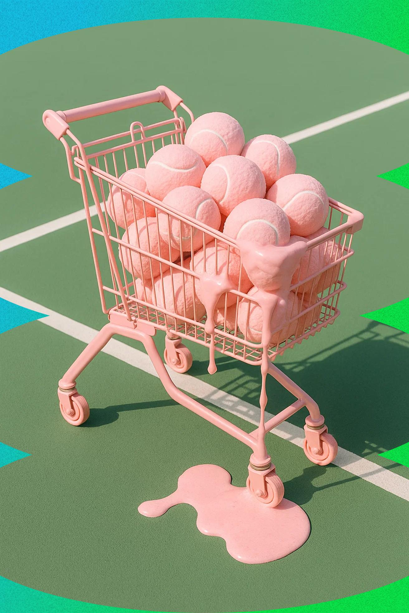
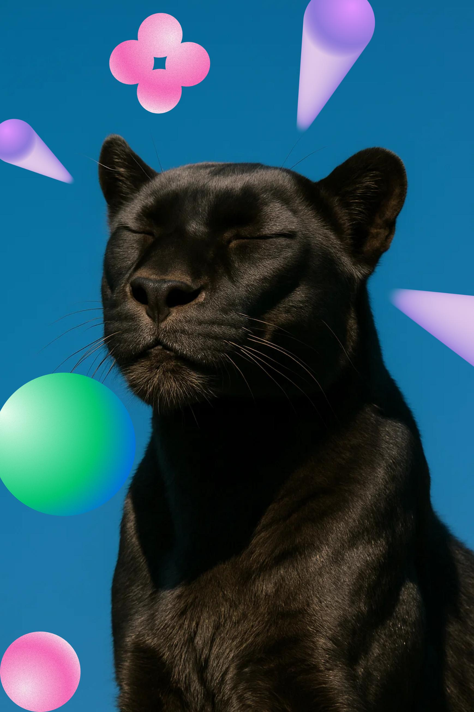
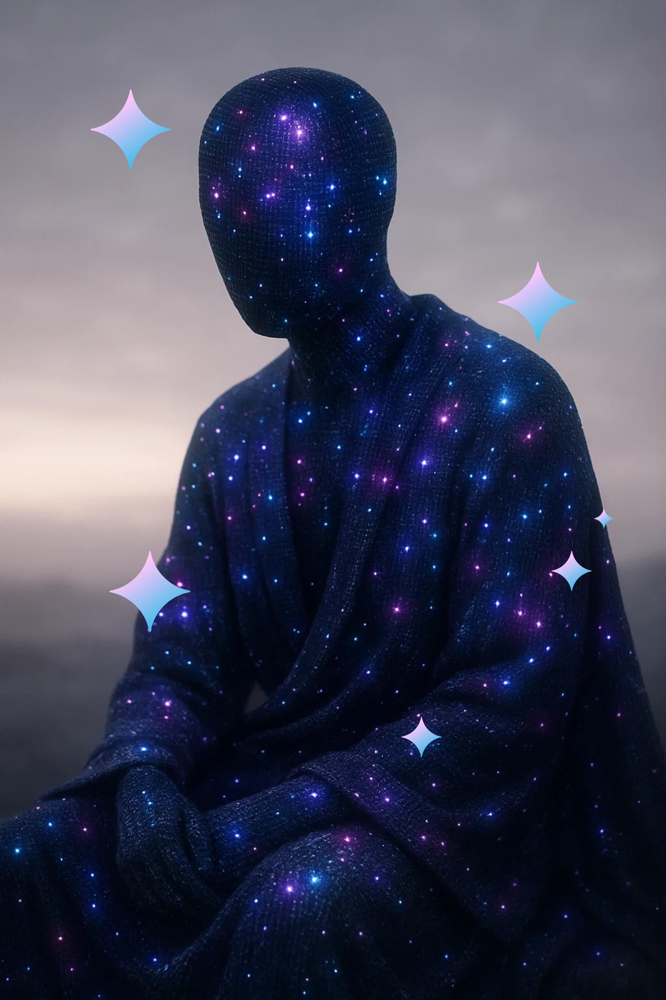
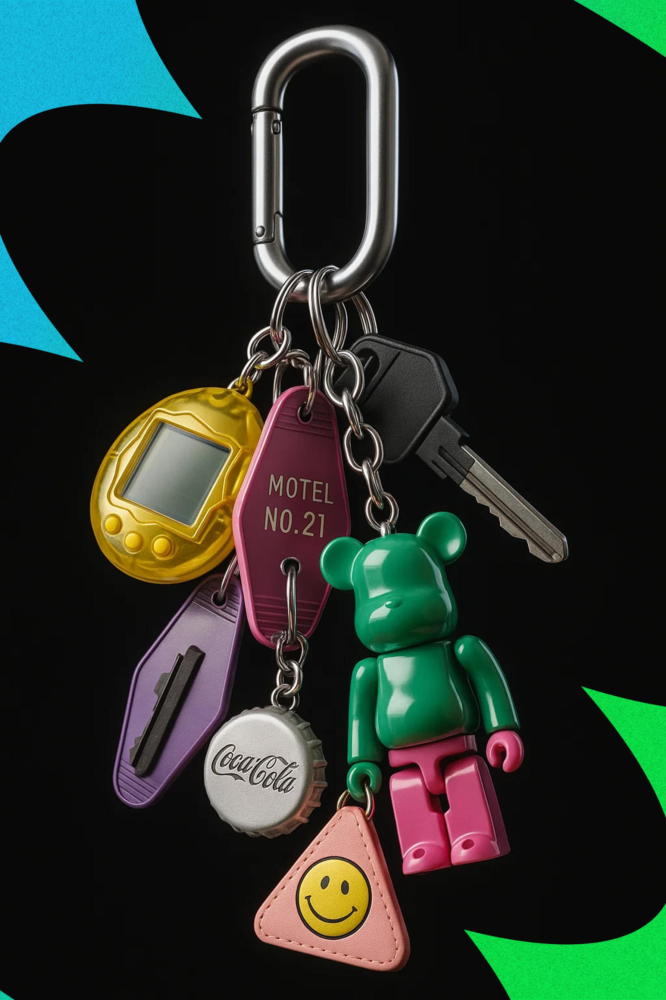

Reveal animations based on scroll direction

Highway Vinyl Nights
The headlights hum along the painted lines
We twist the dial till static turns to choir
Your hand keeps time on the wheel and the night leans in
Every mile is a chorus we have not written yet

Last Diner on Route 9
The coffee tastes like rainwater and luck
Neon flickers slow while the jukebox spins a waltz
We carve our names in steam on the window glass
Stay till sunrise and the road will wait its turn

Stardust Ballroom
Mirror tiles catch every hopeful face
Records spin thin silver threads through the dark
We move like planets pulled by quiet drums
Hold the beat and the night will never close

Sky Without Borders
Lay your worries down beneath the porchlight glow
The crickets stitch soft rhythm in the grass
We trade small dreams and make them loud together
A sky without borders is waiting past the trees